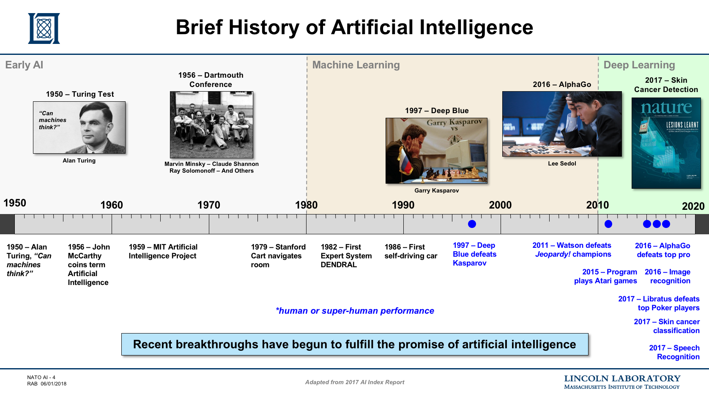
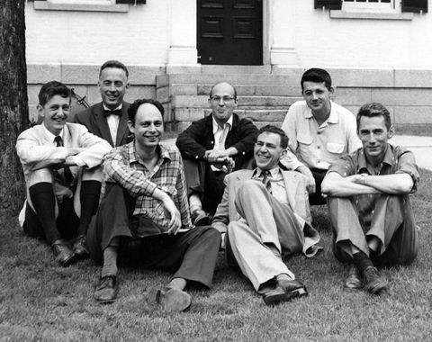
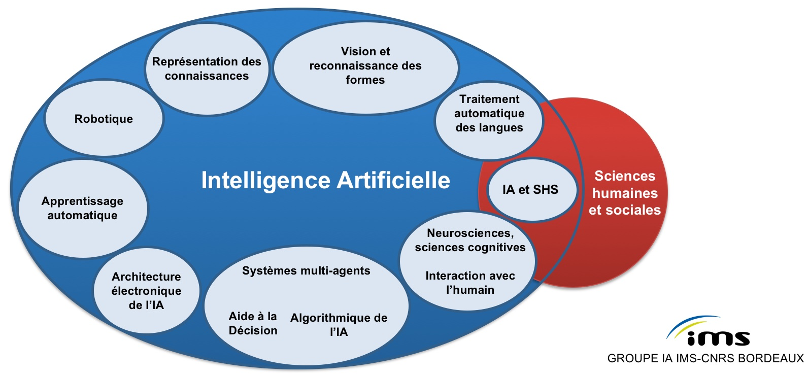
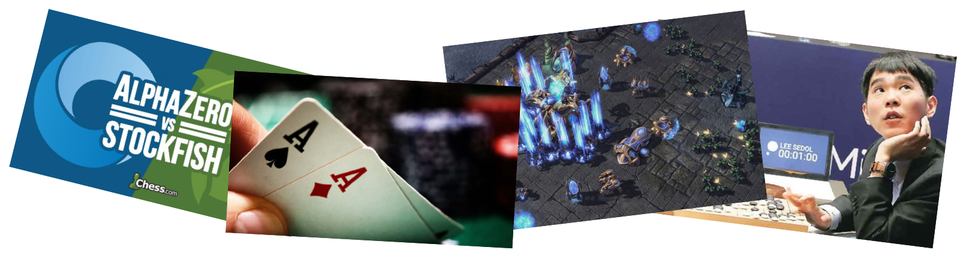

Panorama de l'IA
Ecole Nationale Supérieure de Cognitique

Sommaire
- Qu’est-ce que l’IA ?
- Histoire de l’IA
- Principaux domaines d’étude
- Avancées récentes
- Les enjeux de l’IA
- Quel futur pour l’IA ?
Qu’est-ce que l’IA ?
Tentative de définition
“L’IA consiste à parvenir à faire faire aux machines ce que l’homme fait aujourd’hui mieux qu’elles, notamment s’adapter, apprendre, communiquer et interagir d’une manière riche et variée avec leur environnement.” (FranceIA)
L’IA, interdisciplinaire par nature
Schéma : D. Marion
L’IA, une science impossible ?
“Tout problème pour lequel il n’existe pas de solution algorithmique connue relève a priori de l’IA.” (J.L. Laurière)
“AI is whatever hasn’t been done yet.” (L. Tesler)
IA = frontière de l’algorithmie
Chaque progrès repousse cette frontière !
Histoire de l’IA
La vie artificielle : un rêve depuis l’Antiquité
- Héphaïstos et ses objets animés (Illiade, chant 18).
- Golems de bois ou d’argile de la tradition juive.
Les automates au fil des siècles
1948 : la cybernétique, science des systèmes
Etude des communications et de leur régulation dans les systèmes naturels et artificiels.
Fondée par N. Wiener. Basée sur la modélisation mathématique du neurone (McCulloch et Pitts, 1943) et la théorie de l’information de C. Shannon (1948).
Machines autocorrectives s’adaptant à leur environnement au vu des erreurs commises (boucles de rétroaction), sans intention ni raisonnement.

1956 : conférence de Dartmouth
Parmi les participants : J. McCarthy et A. Samuel (Stanford), M. Minsky et C. Shannon (MIT), H. Simon et A. Newell (Carnegie Mellon), N. Rochester (IBM).

“We propose that a 2-month, 10-man study of artificial intelligence be carried out during the summer of 1956 at Dartmouth College. The study is to proceed on the basis of the conjecture that every aspect of learning or any other feature of intelligence can in principle be so precisely described that a machine can be made to simulate it […].”
Une histoire mouvementée

Des approches divergentes
- Symbolisme (ou cognitivisme) : pensée = manipulation de symboles. Définition de règles permettant de travailler sur des représentations de haut niveau.
- Connexionnisme : pensée = calcul massivement parallèle de fonctions élémentaires. Emergence de comportements à partir des interactions individuelles entre éléments.
Symbolisme Vs Connexionnisme

Cardon, D., Cointet, J. & Mazières, A. (2018). La revanche des neurones
Un système expert : MYCIN (1976)
Diagnostic et proposition thérapeutique en médecine (infections bactériennes du sang).
Exemple de règle :
si le site de la culture étudiée est le sang
le gral de l'organisme est négatif
sa morphologie est de type bâtonnet
si la brûlure du patient est sérieuse
alors il y a 0.4 chances que l'organismes soit pseudomonas
L’été… Jusqu’à quand ?
Principaux domaines d’étude
Une cartographie de l’IA

Résolution de problèmes
- Algorithmes de recherche
- Heuristiques
- Satisfaction de contraintes
- …
Connaissances et raisonnement
- Logique
- Inférence
- Représentation des connaissances
- Web sémantique
- Ontologies
- …
Apprentissage automatique (Machine Learning)
Ensemble de techniques permettant à des machines de s’entraîner sur des bases d’exemples, d’en faire émerger des traits, de généraliser sur des exemples non encore rencontrés et de s’améliorer continuellement avec l’expérience.
Communication, perception et action
- Vision par ordinateur
- Traitement du Langage Naturel (NLP)
- Robotique
- …
Avancées récentes
Reconnaissance visuelle

Compréhension de la parole
Véhicules autonomes

Algorithmes de recommandation

Jeux

Apprentissage profond (Deep Learning)
Ensemble de techniques d’apprentissage automatique dans lesquelles de vastes réseaux de neurones artificiels exploitent de grandes quantités de données.
A l’origine de la majorité des avancées récentes en IA.

Les clés du succès
- L’explosion du volume de données disponibles (“Big Data”)
- L’augmentation de la puissance de calcul des machines
- L’optimisation d’algorithmes connus depuis les années 1980
L’état de l’art vers 1990


Les enjeux de l’IA
Enjeux stratégiques
Rapport FranceIA (2017) :
- Importance des données (nouveau pétrole ?)
- Nécessité d’infrastructures de calcul puissantes
- Guerre des talents au niveau mondial
- Risque de nouvelles dépendances économiques
l’IA et l’emploi
- Automatisation des tâches répétitives, même complexes (médical, juridique, etc).
- Conséquences majeures sur les métiers et les activités au sein des organisations.
- Impact net difficile à prédire.
Enjeux éthiques et sociétaux
- Biais d’apprentissage
- Transparence et confiance
- Performance Vs explicabilité
- Acceptabilité sociale
- Responsabilité et régulation
- Problématique des armes autonomes
Le futur de l’IA
Une IA faible pour longtemps
- IA actuelle faible (narrow/weak AI), spécialisée dans un seul domaine
- IA forte (strong AI) :
- General AI (AGI), capable de réaliser les mêmes tâches intellectuelles qu’un être humain
- IA douée d’une conscience d’elle-même et éprouvant des sentiments.
Singularité (technologique)
Extrait d'une présentation de B. Claverie pour l'Université du futur (2018)
Transhumanisme
Courant de pensée visant à améliorer la condition humaine à travers les technologies :
- Augmentation des capacités physiques et intellectuelles
- Elimination du vieillissement
- Immortalité
Les bébés, ces champions
Extrait des travaux d'E. Dupoux
Les prochaines étapes pour l’IA
- Capacité à apprendre à partir de peu d’exemples
- Bon sens